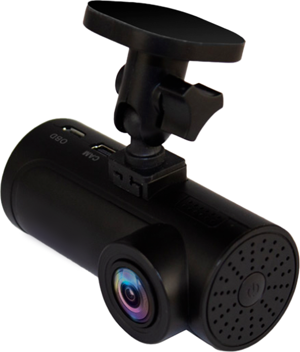

Зустрічай інноваційний відеореєстратор F725s з Wi-Fi та унікальним додатком Gazer Cloud!
Розказуємо, чому F725s зробить тебе щасливішим і значно спростить твоє життя.
Wi-Fi та додаток Gazer Cloud
Записати відео, вилучити карту пам'яті, скопіювати потрібний файл… звучить наче щось із минулого століття, згоден? F725s обладнано вбудованим Wi-Fi-модулем, тому легко підключай реєстратор до смартфону для роботи з контентом.
А завдяки додатку Gazer Cloud ти отримаєш повний доступ до всіх налаштувань і відеоінформації.
Професійна зйомка
з технологією WDR
Якісна зйомка у Full HD в будь-який час доби, максимальна чіткість і деталізація зображення навіть в умовах слабкого освітлення. Широкий кут огляду 140° для повноцінного охоплення всього, що відбувається в кадрі.
Уникнути «сліпих» ділянок при різких перепадах освітлення дозволить технологія WDR. Навіть якщо якийсь елемент або номери іншої машини було засвічено — на відео все буде видно.
Записує події
на парковці в окрему папку
Ти глушиш двигун — реєстратор переходить у режим охоронного запису. Працює від інтегрованого АКБ. І якщо раптом станеться удар від машини, що проїжджає повз, — спрацює датчик удару. Gazer F725s автоматично увімкнеться та почне записувати відео.
Реагує на різкі повороти та гальмування в дорозі
Щоб у відповідальний і важливий момент відео збереглося, в реєстраторі Gazer F725s є G-сенсор. Датчик зафіксує різкі повороти, гальмування або будь-які удари і автоматично вбереже відеофайл від перезапису.
72 години архіву
Реєстратор підтримує найбільшу карту пам'яті — 256 GB. Це означає, що він може безперервно записувати 72 години поспіль. А якщо ти, наприклад, за кермом годину на день — в архіві зберігатимуться записи за 72 дні.
Реалізується завдяки новому сучасному кодеку H.265 (HEVC), за допомогою якого файли займають вдвічі менше місця, зберігаючи якість запису.
Швидка зміна напрямку зйомки
Тобі не доведеться витрачати час на встановлення реєстратора у потрібному напрямку. F725s обертається на 360 градусів, змінюючи напрямок за секунду.

Розширена комплектація для максимального комфорту
Бонус: автомобільний зарядний пристрій 12-24В з додатковим USB-рознімом, щоб ти міг заряджати гаджети прямо в машині, не припиняючи їх використання.